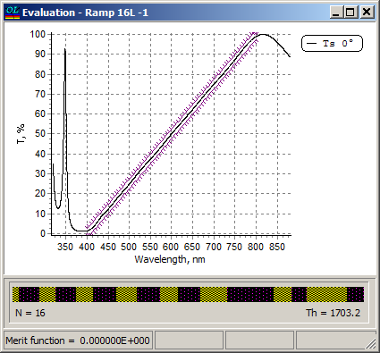

Error Yield Analysis
Error Yield Analysis
Navigation: OptiLayer Menu Commands > Analysis Menu >
Error Yield Analysis
` <integral_values_error_analysis.html>`__ ` <idh_menu_analysis.html>`__ ` <error_yield_options.html>`__
The Error Yield Analysis option allows for the estimation of how many designs with random perturbations of thicknesses and/or refractive indices will still fulfill the requirements. In order to start the Error Yield Analysis, it is necessary to create and load a range target describing the specifications.
It is important that the current spectral characteristics of the loaded design are exactly within the corridor specified by the range target, as illustrated in the Evaluation window.

Transmittance of the 16-layer RAMP design with a ±2.5% range target describing allowed limits for transmittance deviations.

Note: The merit function value for a correctly specified range target should be exactly zero.
After entering the Error Yield Analysis options, the analysis itself will start, and the results will be displayed in the Error Yield Window.
See also: